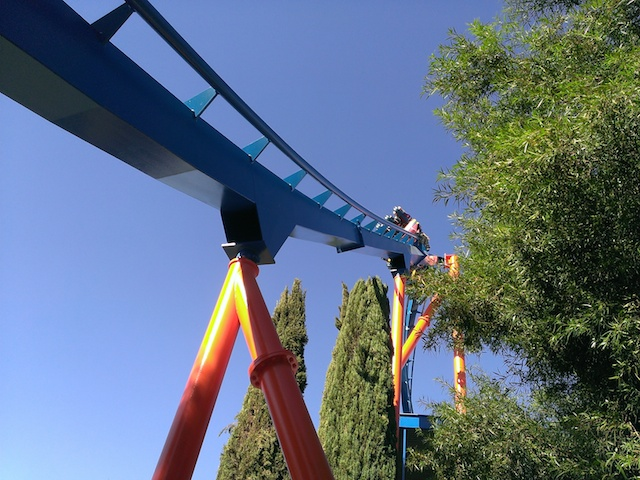
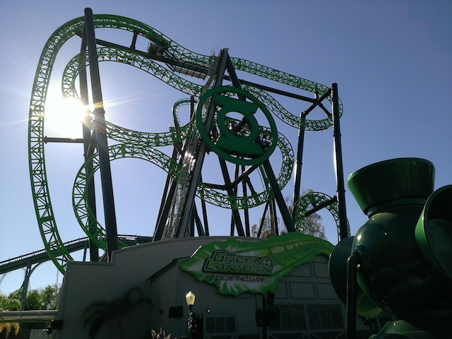
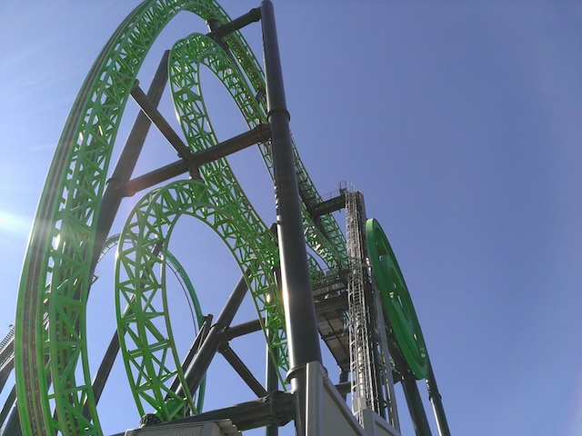
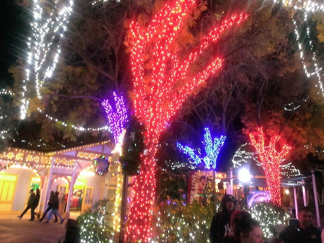
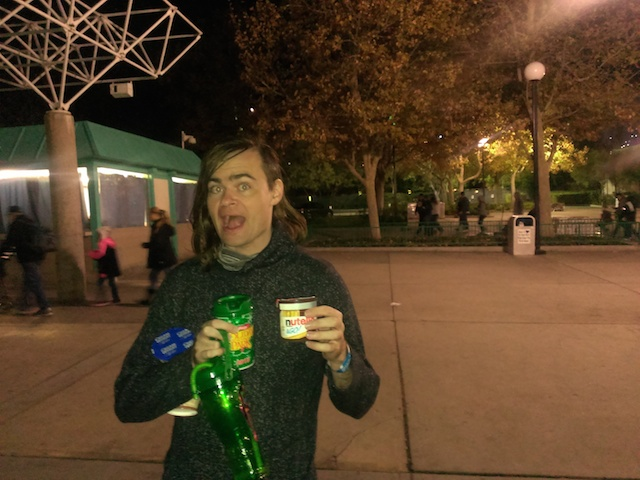

| |
SFMM Winter 2015
All right. Time for another visit to Six Flags Magic Mountain. Now, I ended up not going to Six Flags Magic Mountain FAR LESS than I originally anticipated due to being broke and busy. Ugh. So yeah. I never really had time to go to Six Flags Magic Mountain. And honestly, my former time working there still sort of had me burned out on the place. So I just kept thinking "Ugh. I'll go back to SFMM whenever." Cause yeah. Until today, the last time I visited was when Twisted Collosus opened. So yeah. I definetly felt that another visit was overdue. I wasn't even originally planning on making this an update until I realized "Oh wait! I haven't been going to SFMM recently. This isn't an everyday occurance!". And that break definetly helped as I really had fun today. All right. Let's move on and start the day with Goliath.
It may not be the best ride or anything, but it's just a really fun ride.
Goliath is fun and all, but let's move over to the really good rides. =)
Yeah. It's time for some more Rocky Mountain goodness. =)
 There is just so much airtime, laterals, and other crazy sh*t that makes this ride SO GOOD!!!
There is just so much airtime, laterals, and other crazy sh*t that makes this ride SO GOOD!!!
 HOLY SH*T!!! TWISTED COLLOSUS IS DUELING!!! KICKASS!!!!
HOLY SH*T!!! TWISTED COLLOSUS IS DUELING!!! KICKASS!!!!
 And hey. While we're here, why not take a ride on Scream.
And hey. While we're here, why not take a ride on Scream.
Grr. Scream was technically running two trains, except they're only loading one of them. I F*CKING HATE IT when they do that!!!
I'm not sure why the hell Scream is so fun, but it just is.

ROAR!!!

You know, it's been forever since I last rode Green Lantern. Let's go for a ride on that.

HOLY SH*T!!! This ride is absolute GARBAGE compared to Insane. =(
If you need me, I'll be at Pancho's Bar getting drunk and bitching about how I miss Grona Lund.
Ooh. Happy to hear that they'll be doing Holiday in the Park again this year. =)
 After so many years of waiting and hoping for the OTSRs to come off Revolution, I finally got my wish!!! =)
After so many years of waiting and hoping for the OTSRs to come off Revolution, I finally got my wish!!! =)
I'm so looking foreward to getting on this ride again.
Never have I been this happy to see a ride at SFMM closed. =)
Do not ignore Ninja. It's not only a really fun ride, but it also is getting pretty rare as the Suspended Coaster becomes a dying breed. =( And in other random news, Jet Stream is closed today.
Well, the park suddenly got busy today. Nope. Not going to wait for that.
Single Riders Line for this ride is always a god-send. And hey, Riddlers is always a fun ride.
 Yeah. Terminator is getting rough, but it's not as bad as people claim its getting.
Yeah. Terminator is getting rough, but it's not as bad as people claim its getting.
Hey. Considering how many stupid ads there are plastered all over Six Flags parks, at least this is for something in Six Flags Magic Mountain.
You know, I normally don't talk much about Tatsu. And yeah. I normally avoid Tatsu since I tend to move over towards other rides I like more and by the time I get to Tatsu, it always has a long line since you have to get to Tatsu early in the morning if you don't want to wait in too long of a line. It's been a LONG time since I've ridden this ride. Hell, I've ridden freaking Outlaw Run and Iron Rattler more recently than Tatsu!!! Yeah!! Last time I rode Tatsu was before the Texas/Rocky Mtn Road Trip back in 2013. Yeah, I'm overdue for another ride on Tatsu and will have to make the trek early in the morning.
Ooh. Love the decorations they're putting up the decorations for Holiday in the Park.
Looking foreward to seeing this all lit up tonight.
If a coaster ever warns you that you have to take out your earrings, be afraid. Be very afraid.
 Sweet!!! It's the sweet spot!!! Time for X2!!
Sweet!!! It's the sweet spot!!! Time for X2!!
MARATHON!!!
Well, they finally replaced the Collosus mural with the Twisted Collosus mural. Sweet!! =)
Did anyone bring a giant bag of marshmellows to the park?
YES!!!! THE GINGERBREAD CHEESECAKE IS BACK!!!
So f*cking good. =)
YOU SHALL NOT PASS!!!
All right. Twisted Collosus may have a line now, but it's not that bad. Plus, it's not like we can do much else in the park.
Hey, there's no line at all. Let's go for a couple rides on Batman.
Still one of the strongest B&Ms out there. =)
Ooh!!! The sun has set and now all the lights get to come on. =)
It looked great last year and it looks just as good this year.
Riddlers Revenge vs. Green Lantern. FIGHT!!!!
Uh...why the hell did I decide to ride this?
F*CKING LAME!!! I DON'T CARE WHAT SORT OF SAFETY BULLSH*T YOU TRY AND COME UP WITH TO JUSTIFY!!! THIS IS STUPID!!! YOU HIT PEOPLE ON BUMPER CARS!!! THAT IS THE WHOLE F*CKING POINT!!! GET RID OF THE RULE OR GET RID OF THE RIDE YOU STUPID F*CKING IDIOTS!!!!
I really love all that they've done with the trees.
"Please help with the Finnish Reindeer Refugee Crisis. Don't let them become dinner. Let them into America." =)
HOLY SH*T!!! IS ROARING RAPIDS OPEN!!? WHAT THE HELL IS GOING ON!!!? For those who don't know, I used to work at SFMM and Roaring Rapids was my ride (P2 is not a bad place to be honestly). Now Roaring Rapids was a seasonal ride. It'd open around Spring Break and close right on Halloween. During the off season, when most parks are closed, Rapids would be closed as well, and I'd have to work at either X2, Viper, or in Bugs Bunny World, none of which are as good as Roaring Rapids. So seeing Rapids open when it should be closed for the season is pretty shocking to me, and that's why I'm dumbstruck at something that most people wouldn't think twice about.
 Still not sure what you're trying to project with the fountain guys.
Still not sure what you're trying to project with the fountain guys.
"Don't like our holiday event? Well you better not show it because we are not afraid to crack your nuts! We're not nutcrackers for no reason!"

I seriously am just so impressed with all the lights SFMM has put up. It really looks great.

And to top it all off, they're giving out free Nutella samples outside. YES!!! I F*CKING LOVE NUTELLA!!! SO F*CKING GOOD!!!! I had a blast and hope you enjoyed this update.
Home
|